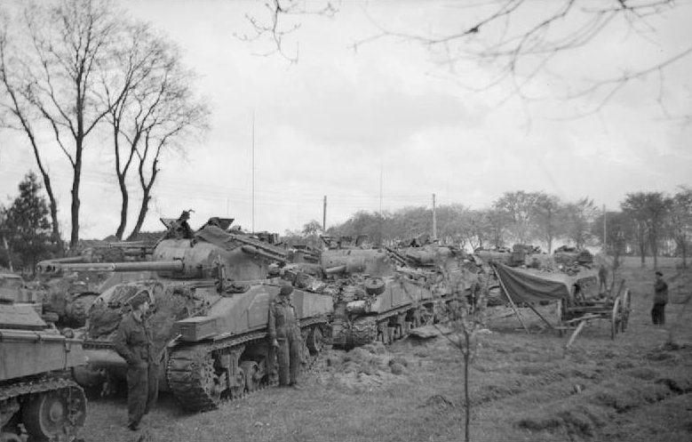
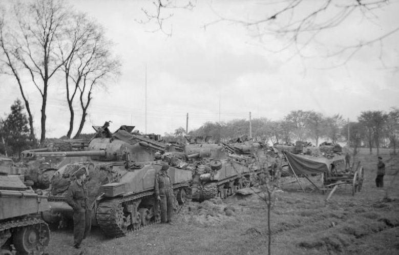

Der damalige m4 Sherman Panzer der von Amerika, Grossbritannien, Kanada, Australien und Neuseeland benutzt wurde, hatte Probleme mit seiner Kanone die neuen Deutschen Panzer, den Tiger und Panther V zu zerstören. Den Panther Turm zu Durchdringen war im nur ab 250m möglich, währenddessen dieser in von 2000m die dickste Panzerung des Shermans durchdringen konnte. Zur gleichen Zeit beweist sich die neue Anti Panzerkanone, der «17 pounder», fähig zu sein die neuen deutschen Panzer ausser Gefecht setzen zu können. Neue Panzer wie der Challenger A30 waren in Entwicklung um die deutschen Panzern zu kontern aber ein Teil des britischen Militärs sah, dass dies zu lange ginge und schlug vor die neue «17 pounder» Kanone in den m4 Sherman einzubauen. Zuerst wurde dieser Vorschlag abgelehnt da nach der ersten Evaluation die Kanone als zu gross galt, aber der Bau des Fireflys wurde später trotzdem durchgesetzt. Da der Sherman Firefly eine längere Kanone hatte wurde dieser oft zum Ziel mit der höchsten Priorität bei den Deutschen, dies versuchte man zu umgehen indem man die Kanone vorne weiss tarnte.
Reichweite (Die dickste Panzer platte wird beschossen)
Vorteile
- Die Produktionskosten sind sehr gering und schon produzierte m4 Shermans konnten umgewandelt werden zu Sherman Fireflys.
- Leicht und somit sehr mobil
- Ist eine grosse Gefahr für Panther und Tiger Panzer
Nachteile
- Auffällig lange Kanone im Vergleich zum normalen Sherman Panzer und wurde damit oft zum Ziel Nummer eins der Deutschen Panzer
- Munition kann nicht, wenn die Schnelllademunition ausgegangen ist, im Panzer drinnen wieder aufgefüllt werden mit der Munition aus dem grossen Munitionslager, sondern die Munition muss ausserhalb hochgereicht werden, dies ist so weil im Turm des Panzers kaum mehr Platz wegen der Kanone ist.
Spezifikationen
| Besatzung | 5 |
| Länge | 5,84 m |
| Breite | 2,62 m |
| Höhe | 2,74 m |
| Masse | 30,3 Tonnen |
| Panzerung | bis 89mm |
| Hauptbewaffnung | 1 × 76,2-mm-Kanone (QF 17 pounder) |
| Sekundärbewaffnung | 1 × 12,7-mm-MG Browning M2
2 × 7,62-mm-MG Browning M1919 |
| Höchstgeschwindigkeit | 40 km/h |
| Leistung/Gewicht | 11,5 PS/t |
| Fahrreichweite | 190 km |
Bilder
 
